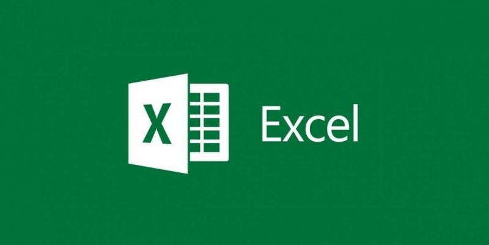
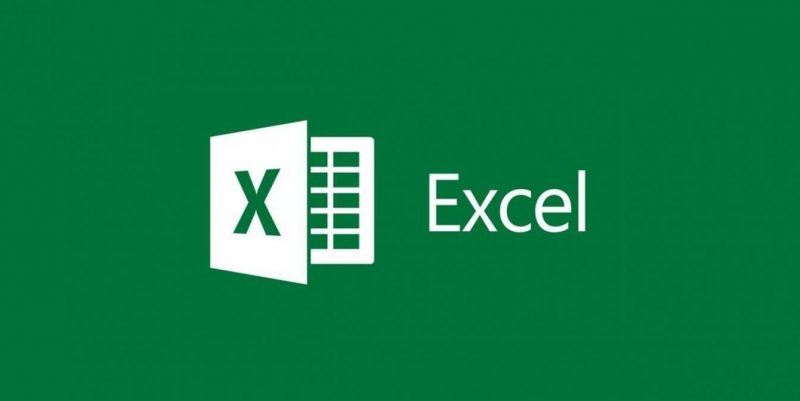

;
; 
Centro Educativo Neosistemas
Tecnología e Informática
David Felipe Cataño Monsalve
Grado : Noveno
Semana 7
Temas
Word, Excel & Power Point
SmartArt(Word)Un Gráfico SmartArt es una representación visual de sus datos e ideas. Para ponerlo en nuestro documento vamos a Insertar >/ Luego vamos a
SmartArt >; Aquí comienza la magia...
...Ejemplo ...
Inicio
¿Que es Word?
Word es un programa informático orientado al procesamiento de textos.
Inicio
¿Para que sirve? Microsoft Word nos puede servir para crear documentos de calidad profesional. Con las herramientas de formato de documento más fáciles, Word le ayuda a organizar y escribir documentos de forma más eficaz.
inicio
¿Que es Excel? Microsoft Excel es una hoja de cálculo desarrollada por Microsoft para Windows, macOS, Android e iOS. Cuenta con cálculo, herramientas gráficas, tablas calculares y un lenguaje de programación macro llamado Visual Basic para aplicaciones.

Inicio
¿Para Que Sirve Excel? Podemos decir que Excel es una herramienta para poder hacer cualquier tipo de cálculo matemático en una hoja: hoja de cálculo. Se pueden realizar operaciones matemáticas y crear tablas de números para realizar operaciones con ellas posteriormente de una manera eficaz y rápida.Inicio
Ejemplos
Inicio
Power Point(Definición) Microsoft PowerPoint es un programa de presentación desarrollado por la empresa Microsoft para sistemas operativos Windows, macOS y últimamente para Android y iOS. Inicio
Utilidad Es un programa diseñado para hacer presentaciones con texto esquematizado, así como presentaciones en diapositivas, animaciones de texto e imágenes prediseñadas o importadas desde imágenes de la computadora. Se le pueden aplicar distintos diseños de fuente, plantilla y dibujos.Inicio
SmartArt >; Aquí comienza la magia...
...Ejemplo ...
